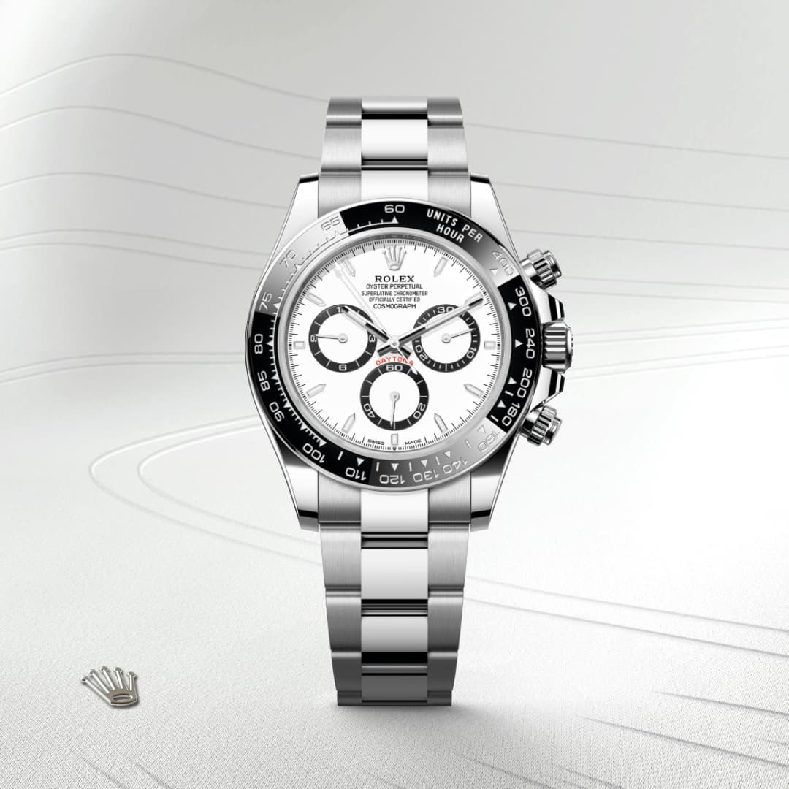
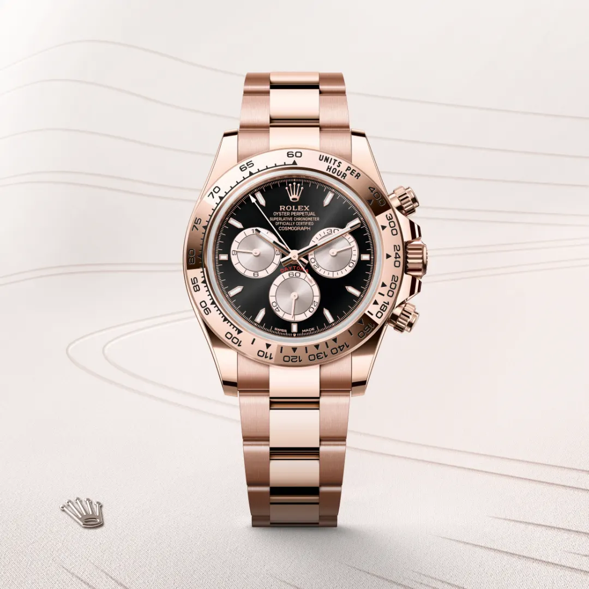
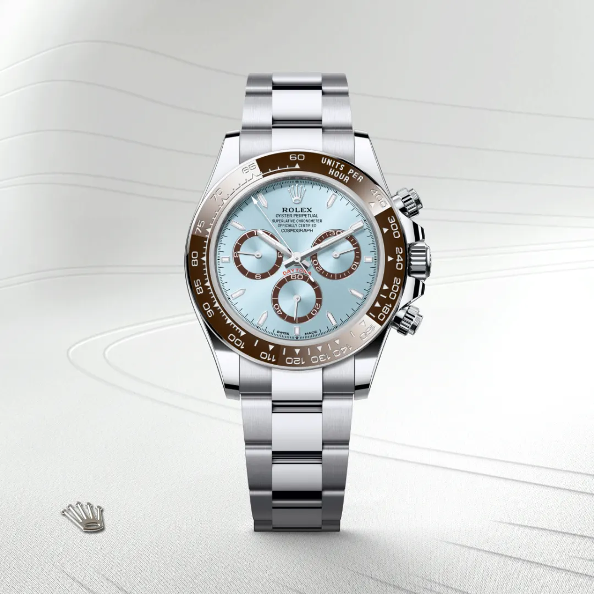

El Rolex Daytona de oro con esfera negra y detalles dorados combina lujo y precisión. Su caja y brazalete de oro macizo resaltan frente al contraste elegante de la esfera negra, mientras los índices y agujas doradas aportan sofisticación. Diseñado para amantes de la relojería deportiva y de alta gama, este cronógrafo icónico ofrece resistencia, funcionalidad y estilo atemporal, convirtiéndose en una pieza de colección imprescindible para quienes buscan exclusividad y rendimiento.

Rolex Daytona Panda
$56.200
El Rolex Daytona “Panda” destaca por su icónica esfera blanca con subesferas negras, evocando la estética de un panda. Su diseño combina elegancia y deportividad, con caja de acero y cronógrafo de alto rendimiento. Este reloj emblemático ofrece precisión suiza, funcionalidad profesional y un estilo atemporal, convirtiéndolo en una pieza codiciada tanto por coleccionistas como por aficionados a la relojería que buscan un equilibrio perfecto entre sofisticación y carácter deportivo.

Rolex Daytona Oro Rosa
$45.000
El Rolex Daytona de oro rosa combina lujo y sofisticación en un diseño atemporal. Su caja y brazalete de oro rosa resaltan con elegancia frente a la esfera, disponible en tonos que armonizan con los detalles del cronógrafo. Este reloj icónico ofrece precisión, resistencia y estilo deportivo, convirtiéndose en una pieza deseada por coleccionistas y aficionados de la alta relojería que buscan exclusividad, rendimiento y un toque de distinción en cada detalle.

Rolex Daytona Marino
$50.100
El Rolex Daytona con esfera azul marino es una pieza destacada en la colección de la marca, conocida por su elegancia y precisión. Este modelo, con referencia 116509, presenta una caja de oro blanco de 18 quilates de 40 mm y una esfera azul brillante que refleja la luz con un acabado sunburst. Los índices y agujas están aplicados en oro de 18 quilates y cuentan con un revestimiento luminescente Chromalight para una legibilidad óptima. El bisel fijo de oro blanco está grabado con una escala taquimétrica, característica distintiva del Daytona, permitiendo medir velocidades medias. Este cronógrafo de alto rendimiento está impulsado por el calibre 4130, un movimiento mecánico de cuerda automática que ofrece una reserva de marcha de aproximadamente 72 horas.